In Atom it is time to add our repository. Under the View pull-down menu select Toggle command palette.
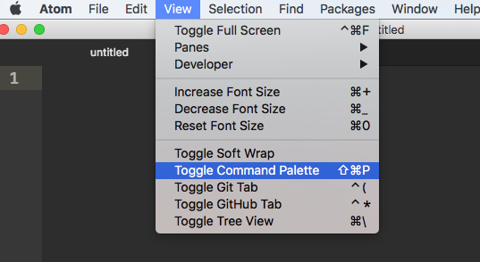In the command palette, type git clone and then hit the enter or return key.
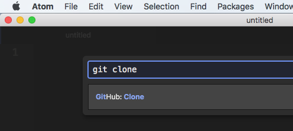Now click in the Clone from box and paste the path you copied from github.com. Then you need to update the To directory with the path you want for your project. Make sure to paste first to get the project folder name in the path correct.
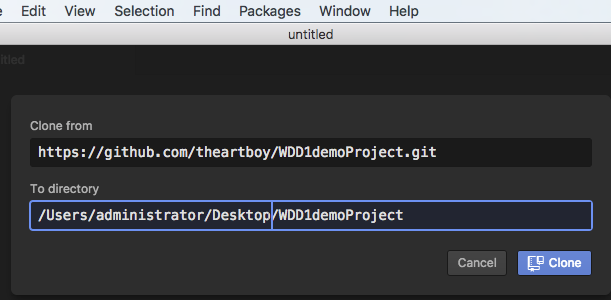Now you are ready to add files to the project.
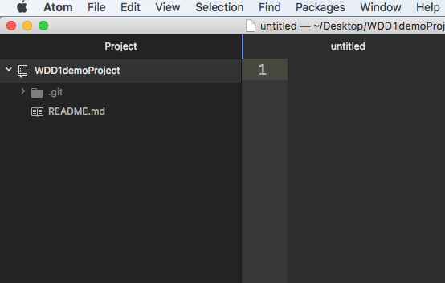Drag over any files you wish to add to the project. Create any new files. You will notice new files will be colored green in the project panel.
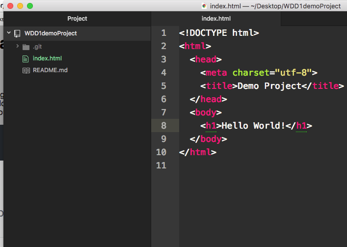Click on the Packages pull-down menu and then select Github and then select Toggle Git tab.
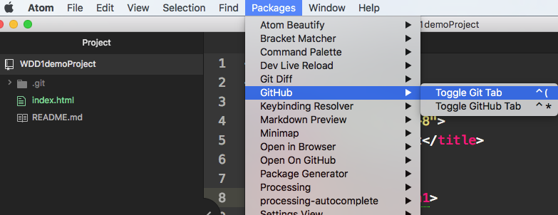In the git panel you will see a list of unstaged assets. Staging is where you prepare the files to be added to the project revision. Click the Stage all button in the upper right corner of the git tab.
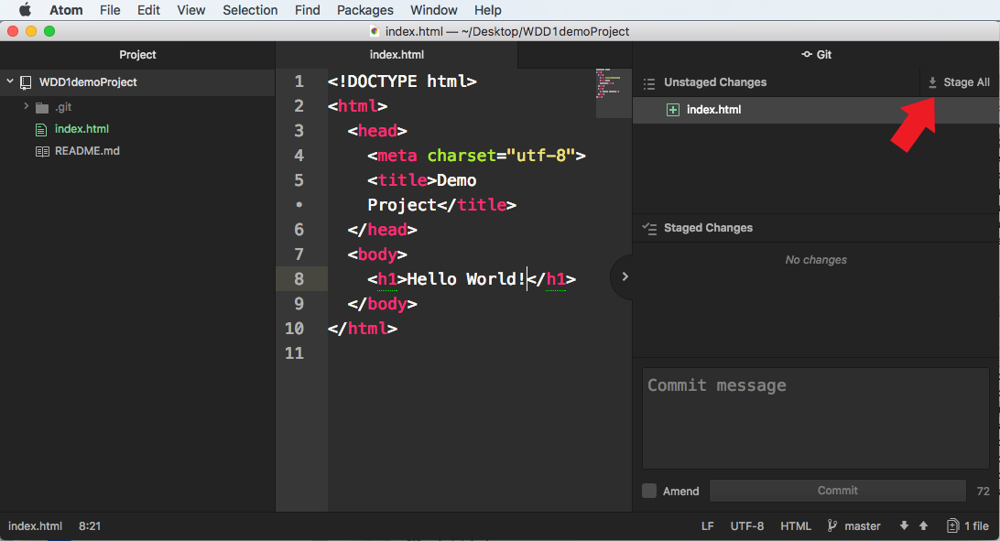After staging the files you will then provide a description of the changes to this version of your project. Commits should be made after making content or structural updates to a project. Think of each commit as an UNDO. Git allows you to go back to any previous commit and take the project in a new direction or even multiple directions.
Type your commit message in the commit field. The message should be short, easy to understand, and reveal the substance of the change. Click the Commit button.
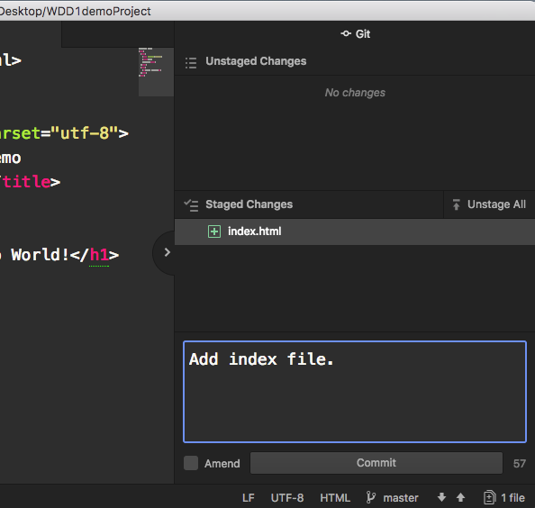The next step is to push your update to the github remote (cloud) server. At the bottom right corner of the git panel you will see an up arrow.
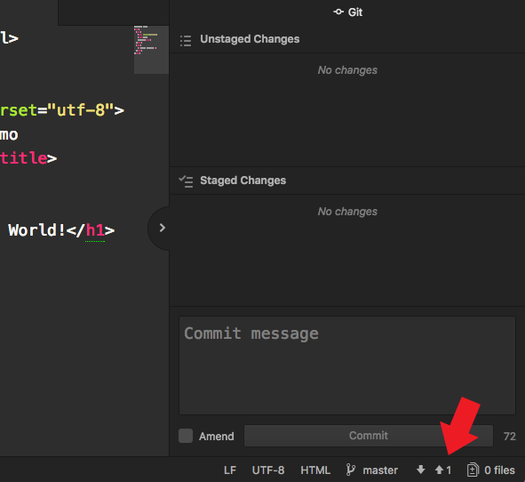Click on the up arrow and then click the Push button.
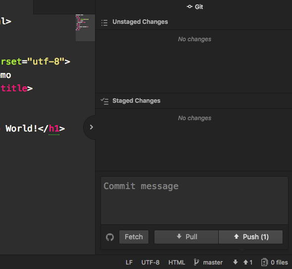Now you may be prompted to enter your github username and password to complete the PUSH (sync) to the server.
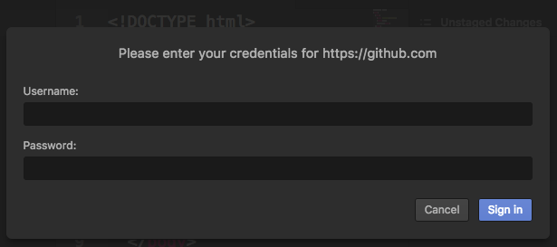